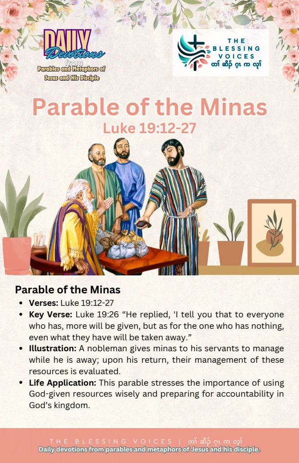

Introduction
Read this English paraphrase of the biblical passage alongside the original companion booklet. Context notes, devotional applications, reflection questions, and prayer are study aids rather than additional biblical text.
The Bible Story
A nobleman travelled to receive a kingdom and return. He entrusted money to ten servants, instructing them to conduct business. His citizens opposed his rule. On returning as king, he called the servants to account. One reported that his mina had earned ten more and another that it had earned five; they received responsibility over cities. Another had kept his mina wrapped away, explaining his fear of the master. The king judged his response and ordered the mina given to the servant with ten. The parable ends with judgment on the enemies who opposed his reign. This is a paraphrase of Luke 19:11–27.
Historical and Biblical Context
CONTEXT & DEVOTIONAL INTERPRETATIONLuke explains that Jesus told this near Jerusalem because people thought the kingdom would appear immediately. The Minas in Luke is distinct from the Talents in Matthew 25; its characters and amounts should not be merged.
Spiritual Lessons
CONTEXT & DEVOTIONAL INTERPRETATIONThe story invites reflection on responsibility during an absence, accountability, and the seriousness of the king’s return. Its narrative judgment is not an instruction for readers to use violence.
Practical Life Applications
CONTEXT & DEVOTIONAL INTERPRETATIONIdentify a responsibility you have been avoiding. Take a faithful next step with the resources entrusted to you instead of letting fear produce inaction.
Reflection Questions
- Why does Luke say Jesus told this parable?
- How do the servants respond differently to their responsibility?
- What entrusted responsibility needs your attention this week?
Closing Prayer
Lord God, help us hear your Word with humility. Guide our choices and teach us to respond with faith, mercy, and faithful action. Amen.
Continue your reflection.
Your free companion study booklet.
Download Free Booklet ↓PDF · Free download